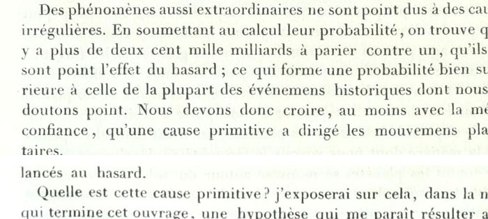

“Plus de deux cent mille milliards à parier contre un” (book V, ch. 6)
French: 6th ed., 1835, p. 444, scan. Highlighted: the words Lecky quotes.

… C’est du moins ce que l’on observe pour la lune, pour les quatre satellites de Jupiter et pour le dernier satellite de Saturne, les seuls satellites dont on ait reconnu jusqu’ici la rotation.
Des phénomènes aussi extraordinaires ne sont point dus à des causes irrégulières. En soumettant au calcul leur probabilité, on trouve qu’il y a plus de deux cent mille milliards à parier contre un, qu’ils ne sont point l’effet du hasard ; ce qui forme une probabilité bien supérieure à celle de la plupart des événemens historiques dont nous ne doutons point. Nous devons donc croire, au moins avec la même confiance, qu’une cause primitive a dirigé les mouvemens planétaires.
… Quelle est cette cause primitive ? J’exposerai sur cela, dans la note qui termine cet ouvrage, une hypothèse qui me paraît résulter avec …
… This at least is what is observed for the moon, for the four satellites of Jupiter and for the last satellite of Saturn, the only satellites whose rotation has so far been recognised.
Phenomena so extraordinary are not due to irregular causes. Subjecting their probability to calculation, one finds that there are more than two hundred thousand billion to bet against one that they are not the effect of chance; which is a probability far greater than that of most of the historical events we do not doubt. We must therefore believe, at least with the same confidence, that a primitive cause directed the planetary motions.
… What is this primitive cause? I shall set out on this, in the note that ends this work, a hypothesis which seems to me to follow with …
Lecky writes “dûs” and “deux cents”; the 1835 print has “dus” and “deux cent”.
Backlinks
Every place in Rationalism in Europe that links to this page (generated automatically when the site is built).
- Chapter III: note 120